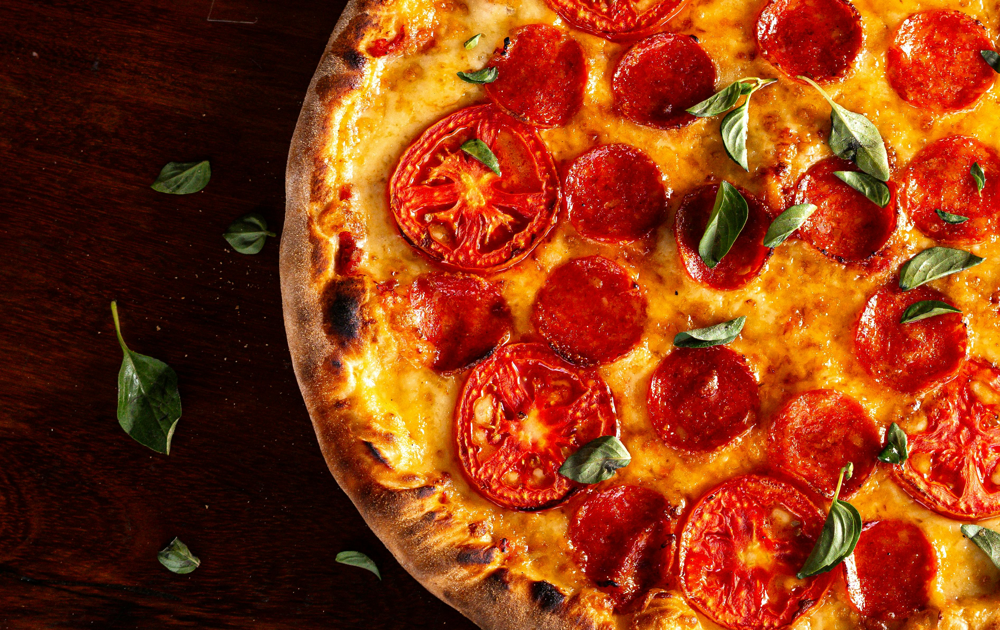

Home
Pizza

Description
Pepperoni pizza is a super tasty and incredibly easy-to-make pizza. Check out my favorite recipe for this delicious pizza with spicy pepperoni salami and the perfect tomato sauce.
Ingredients
Pizza Dough
- 1 cup of wheat flour (0-180 grams)
- Up to half a cup of warm water (up to 125ml)
- 1 tablespoon of olive oil extra vergine
- Half a teaspoon of instant yeast (up to 5g)
- half a teaspoon of salt
- A pinch of sugar
Pizza Sauce and Toppings
- 140 grams of San Marzano tomatoes
- 1 tablespoon of olive oil extra vergine
- 60 grams of grated mozzarella cheese
- 15 grams of salami pepperoni slices
-
Spices and herbs:
- A handful of fresh basil leaves
- 1 small clove of garlic
- 1/3 teaspoon of dried oregano
- A pinch of pepper and salt
Steps
Sauce
- Peel tomatoes and chop them into small pieces
- Heat up a small pan with a tablespoon of olive oil and then add a small clove of garlic, peeled and pressed
- After a minute add the tomatoes and spices:
- 1/3 teaspoon of dried oregano
- A pinch of pepper and salt
- Mix the sauce and after two minutes turn off the heat
Dough
- Pour the warm water into a bowl
- Add half a teaspoon of instant yeast and a pinch of sugar
- Wait a few minutes so the yeast can dissolve in water by themselves
- Add a full cup of wheat flour
- At the end pour in a flat tablespoon of olive oil and add half a teaspoon of salt
- Knead the dough by hand or in mixer with a dough hook for at least 5 minutes. The dough should form into a ball, but if needed, you can sprinke flour, form the ball and leave in the bowl.
- Cover the bowl with dough inside with a cotton cloth or food foil and leave it to grow for an hour near a warm place.
Pizza
- Put a tray in the middle of the oven and set the oven to at the maximum heat (atleast 250 degrees Celcius) with option of baking pizza, heating top and bottom or with the convection with the heater at the bottom.
- Put baking paper on a board and sprinkle heavily with flour. Put the ball of dough on the paper.
- Stretch the dough with your hands into a circle shape with a diameter of around 25 centimeters. Leave the pizza edges thicker.
- Spread the sauce on the pizza, leaving the edges
- Put the cheese and pepperoni on the pizza
- Put the ready pizza onto the tray and observe the baking process. If the oven was pre-heated then the pizza should be ready after around 12 minutes. (Up to 15 minutes)
- Take out the pizza instantly after baking finished and add basil etc.
- Enjoy the pizza!